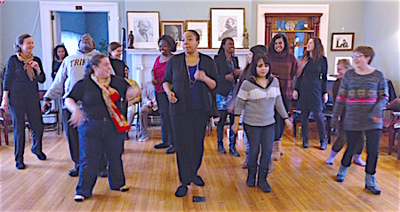
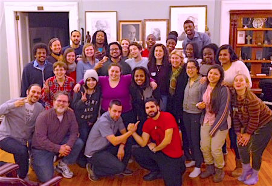

Friends,
"The students have taken the struggle for justice into their own strong hands. ... The youth must take the freedom struggle into every community ... into every nook and cranny. ... The students will certainly want to delve deeper into the philosophy of nonviolence." --Martin Luther King, Jr., 1960
This winter in California, the Fellowship of Reconciliation will once again commemorate Martin Luther King, Jr. Day through an intergenerational program rooting Dr. King's vision of the Beloved Community in FOR's tradition of active nonviolent resistance. Read on for the details, and please share this news with others.

Participants in the 2015 Campus Weekend pilot program build community through dance. |
FOR's Campus Weekend in January 2015 was a resounding success! As one student said: "The discussions of the philosophy of nonviolence helped me move from hating injustice to loving justice. ... A retreat like FOR['s] is the best prevention for activist burnout."

Rev. Osagyefo Sekou leading a nonviolence training in Boston. |
Next month at Riverside City College in Southern California, FOR Campus Weekend will again convene college students and mentors in conversation with wisdom-figures carrying this tradition as elders, organizers, and spiritual leaders.
These two days of workshops, community building, and retreat will move through personal and spiritual transformation to practical tools for active nonviolent resistance, culminating in a direct action campaign role-play. Learn more.
Leadership
- Rev. Kristin Stoneking, FOR Executive Director
- Rev. Osagyefo Sekou, FOR Bayard Rustin Fellow
- Gretchen Honnold, FOR Training Coordinator
- Lizzy Jean, Deep Abiding Love Project

Participants lock arms during nonviolent civil disobedience training at The Riverside Church in New York City. |
Our strategy and principles
The Black-led Freedom Movement -- encompassing the current Movement for Black Lives -- serves as a primary lens through which this program interrogates questions of justice, spirituality, nonviolence, and active resistance.
We will draw upon the creative resistance of this movement in pursuit of a more just society for our context today.
FOR Campus Weekend participants will complete the weekend with a renewed spiritual commitment to justice work and a belief in their own people power, as well as a stronger, nationwide community of support and a plan for taking nonviolent action in their communities.
Help support Campus Weekend in California and beyond
Our trainings in active nonviolence can't happen without your support.
Here are some ways you can get involved:
- Forward this information to students, and those who work with students, in Southern California.
- Encourage your local colleges and universities (or their student groups) to host FOR speakers on nonviolence in 2016.

Campus Weekend participants with Rev. Kristin Stoneking and the Peace Poets after open mic night. |
More information about Campus Weekends
Special thanks and appreciation go to our sponsors and coordinators who have made this cycle of FOR Campus Weekend possible: Riverside City College, Riverside Interfaith Council, RCC Law Society, Calvary Presbyterian Church, Inland Communities FOR chapter, and Don Ajene Wilcoxson.
Visit our website for details on the program and how to apply.
In the spirit of nonviolent resistance to injustice,
 Gretchen Honnold Gretchen Honnold
Training Coordinator
Fellowship of Reconciliation USA
P.S. We really can't train students in active nonviolence without some financial investment on our part. In this season of year-end giving, make a tax-deductible donation to FOR and help us take Campus Weekends nationwide! |